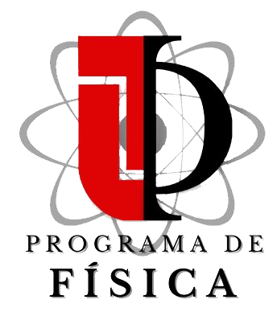

Forma de onda
x(t)
Representa la señal en el tiempo. Permite observar amplitud, pulsos, periodicidad y cambios rápidos.
Pregunta guía: ¿cómo cambia la señal?
Observa la misma grabación desde tres perspectivas complementarias: tiempo, frecuencia y tiempo–frecuencia.
Carga una grabación para comenzar. Para audios largos podrás navegar por toda la señal y seleccionar solamente el intervalo que quieras estudiar.
La amplitud muestra cómo cambia la presión/señal registrada con el tiempo. El marcador identifica el mayor valor absoluto observado en el intervalo.
El espectro promedio revela qué frecuencias dominan el intervalo seleccionado. La frecuencia principal aparece marcada.
Cada color representa la energía de una banda de frecuencia en un instante. Esta vista permite observar patrones, pulsos, armónicos y cambios en la vocalización.
No hace falta ser especialista en procesamiento digital de señales para interpretar las gráficas. Estas tres herramientas describen la misma señal desde preguntas diferentes.
Representa la señal en el tiempo. Permite observar amplitud, pulsos, periodicidad y cambios rápidos.
Pregunta guía: ¿cómo cambia la señal?Descompone la señal en componentes de frecuencia. Un máximo espectral indica una frecuencia con gran contribución energética.
Pregunta guía: ¿qué frecuencias aparecen?Calcula Fourier sobre ventanas cortas que se desplazan en el tiempo. Así podemos saber cuándo aparece cada componente.
Pregunta guía: ¿cómo evolucionan las frecuencias?Las vocalizaciones animales pueden funcionar como señales de comunicación, reconocimiento o competencia. La frecuencia dominante, la estructura de armónicos, la duración y la repetición temporal son características que pueden ayudar a comparar individuos, especies o comportamientos.
Registrar
carga o graba la señal.
Seleccionar
elige un intervalo representativo.
Transformar
FFT y STFT revelan su estructura.
Interpretar
relaciona patrones acústicos con la pregunta biológica.